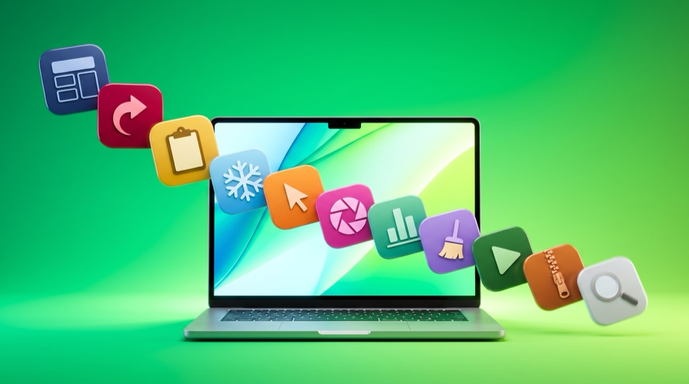

Superdock
SuperdockBest Mac apps under $10

Short answer. The best Mac apps under ten dollars are Rectangle (free), AltTab (free), Maccy (free), Shottr ($8), Keka ($5 on the App Store) and Superdock ($7.99). Four of the twelve below cost nothing, and in two categories the free option is genuinely the better app. Every price is stated in its heading so you never have to hunt for it.
A disclosure. One of the twelve is mine, Superdock at $7.99, and I have put it eighth rather than first. Judge that entry hardest. The prices below were checked in September 2026 and may drift.
Why this list exists
The top result for this search has been an eight-year-old forum thread for a long time, which tells you how little attention the price band gets. Most Mac app writing covers either free open source tools or the expensive end, and the ten-dollar band in between is where a lot of the genuinely good small software lives.
Scope. One-time purchases and free apps only. No subscriptions, even cheap ones, because a $3 monthly app is $108 over three years and does not belong on a list about spending under ten dollars.
The apps

Rectangle (free)
Window snapping with keyboard shortcuts. Halves, thirds, quarters, and a drag-to-edge mode.
Magnet costs about $8 and does roughly the same thing. Rectangle is free and open source, so start here.

AltTab (free)
A real window switcher. Hold Option, press Tab, see every window as a thumbnail rather than one icon per app.
Nothing paid in this band does this better.

Maccy (free)
Clipboard history, searchable from the menu bar or a shortcut. No accounts, no sync, no cloud.
Paste is prettier and syncs across devices, and costs far more than this list allows.

Ice (free)
Hides menu bar icons behind a divider, which matters on a MacBook where the notch eats the middle of the bar.
Bartender is around $16, more polished, and outside this list's budget. Ice does the core job.

Shottr (free, licence about $8)
Screenshots with annotation, scrolling capture, measurement and text recognition, and it is fast because it is native.
CleanShot X is the better-known tool and costs several times more. Shottr covers most of it.

Keka (free from the site, about $5 on the App Store)
Creates and opens every archive format you will meet, including RAR and 7z which macOS cannot handle alone.
The App Store price is a way to support the developer. The download is the same app.

LinearMouse (free)
Separates mouse and trackpad settings, and turns off pointer acceleration for third-party mice.
Mac Mouse Fix does more for a few dollars. LinearMouse fixes the thing most people actually notice.

Superdock (free, profile icons $7.99 once)
Mine. The dock, window previews, the switcher and multi-display support are free forever. The paid part is one Dock icon per Chrome profile, free for 14 days then $7.99 once for up to five Macs.
Only buy it if you actually run several Chrome profiles. If you do not, the free part of the app is the whole product.

Raycast (free)
A launcher that replaces Spotlight and folds in clipboard history, window snapping, snippets and a calculator.
Alfred's Powerpack is the paid equivalent and costs well over this list's limit. Raycast's free tier covers most of it.

IINA (free)
A modern native video player that handles what QuickTime refuses, with picture in picture and a music mode.
VLC handles more obscure files. IINA is the nicer one to actually use.

AppCleaner (free)
Uninstalls an app along with the support files and preferences it left behind.
Paid cleaners bundle this with a lot you do not need. This does the one useful part.

Stats (free)
CPU, memory, disk, network and temperature readings in the menu bar, each module optional.
iStat Menus is the paid standard and is better. Stats is free and covers what most people check.
At a glance
| App | Price | Verdict |
|---|---|---|
| Rectangle | Free | Best if you want window snapping |
| AltTab | Free | Best if you came from Windows |
| Maccy | Free | Best if you want clipboard history only |
| Ice | Free | Best if the notch crowds your menu bar |
| Shottr | About $8 | Best if CleanShot X feels expensive |
| Keka | Free or about $5 | Best for RAR and 7z |
| LinearMouse | Free | Best with a third-party mouse |
| Superdock | $7.99 once | Best only if you run several Chrome profiles |
| Raycast | Free | Best if you want one app instead of four |
| IINA | Free | Best everyday video player |
| AppCleaner | Free | Best for clean uninstalls |
| Stats | Free | Best free system monitor |
What ten dollars does not buy
Worth being straight about the ceiling. Under ten dollars you will not find a serious note system, a password manager worth trusting, or a full window manager with saved layouts. Those categories start higher and the cheap options in them are usually worse rather than better value.
The band is good for single-purpose utilities, and that is most of what is on this list.
Frequently asked questions
Are these one-time purchases or subscriptions?
Every paid app here is a one-time purchase. Subscription apps are excluded on principle, because even a cheap subscription passes ten dollars within a few months.
Why are so many of the picks free?
Because in several categories the free app is genuinely the best one. Recommending a paid alternative when Rectangle or AltTab already wins would make the list worse.
Is $7.99 for Chrome profile icons worth it?
Only if you run several Chrome profiles daily. If you do not, that feature has no value to you and the free part of the app is the whole product.
Do App Store prices differ by country?
Yes. Every price here is the US one and yours may differ with tax and currency.
Download free Superdock is free to download. The dock, window previews, the switcher and multi-display support are all free. Chrome profile icons: 14 days free, then $7.99 once. macOS 14 or later.
Continue reading

Independent macOS developer and the author of Superdock. I switched to a Mac from Windows, lost the per profile taskbar buttons I relied on, and built the dock I wanted instead. I write these guides from daily use of the apps in them, and I answer the support email myself.